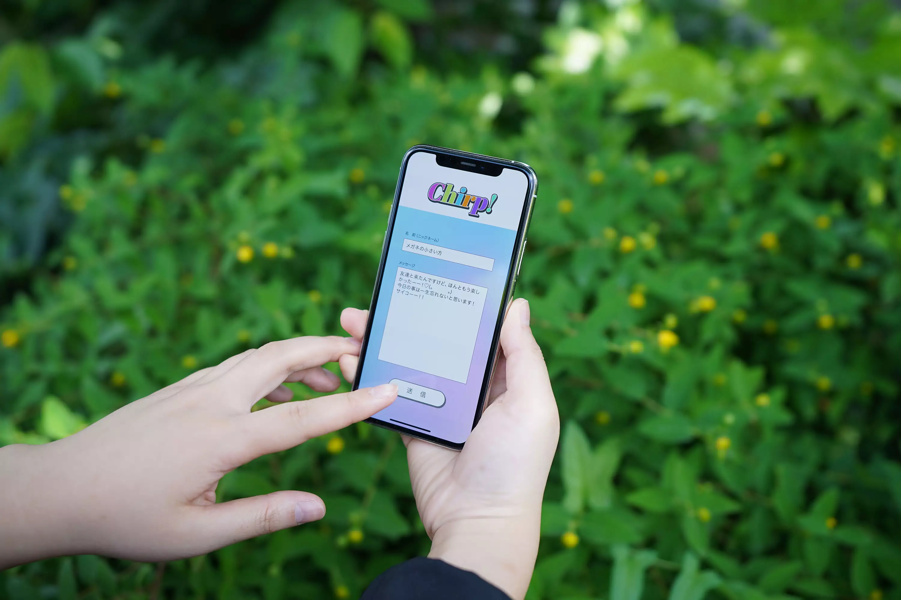
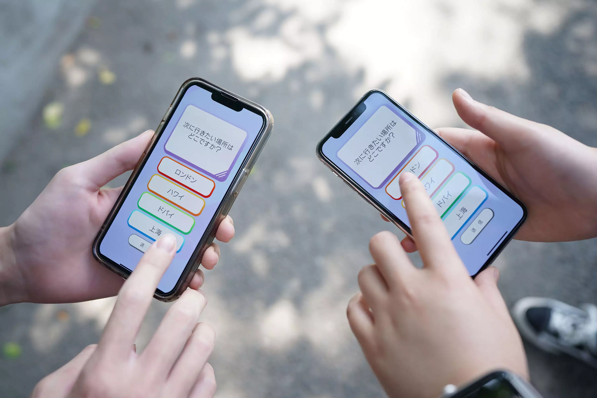
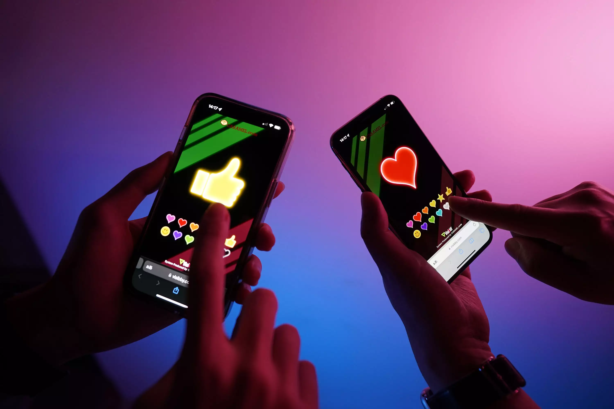

- 
- 
- 
スマートフォンに表示されたスタンプを
タップし、
リアルタイムに会場スクリーンや
配信画面上に
スタンプを表示できる機能。
映像上にスタンプをオーバーレイ表示し
ライブやイベント、番組の参加者の反応を
即時に体感することができます。
スタンプはあらかじめ用意された
汎用セット以外に、
イベントオリジナルの
スタンプの制作も承っています。
送出のシステムPCからフィル信号と
キー信号が送出される
ので、
スイッチャーで合成することにより
カメラ画像に
オーバーレイ表示することも
可能です。
また今後のアップデートで、
VisibbyシステムPCにビデオ入力が有れば、
アプリケーション上で合成できる機能の
実装も
予定しています。
Twitterや専用の投稿フォームに
投稿
されたメッセージを表示する機能。
ハッシュタグをつけたツイートや
専用の投稿フォームからのメッセージを
映像に
オーバーレイ表示する
「ローワーサード表示」や、
多数のコメントを画面に
一度にスクロール表示する
「弾幕表示」、
メッセージがふきだしと共に現れる
「ふきだし表示」など、
展示会やイベント、番組などによって
さまざまな
レイアウトで
表示することができます。
またNGワード設定もできるため、
意図しないコメントが表示されるのを
防ぐこともできます。

視聴者参加型のクイズやアンケートを、
リアルタイムで
集計し
投票数や
パーセンテージを表示することが
できる機能。
ブラウザでの参加が可能なので
気軽に多くの方に
参加していただけます。
投票結果を棒グラフで表示することで、
視覚的に
わかりやすく演出することが
できます。
2択～4択までの質問に対応しています。
ライブコンサート、イベント、展示会、
テレビ/配信番組、博物館/美術館、
工場見学など
様々なシチュエーションに
合わせたご提案をいたします。
お気軽にお問い合わせください。
お問い合わせはこちら